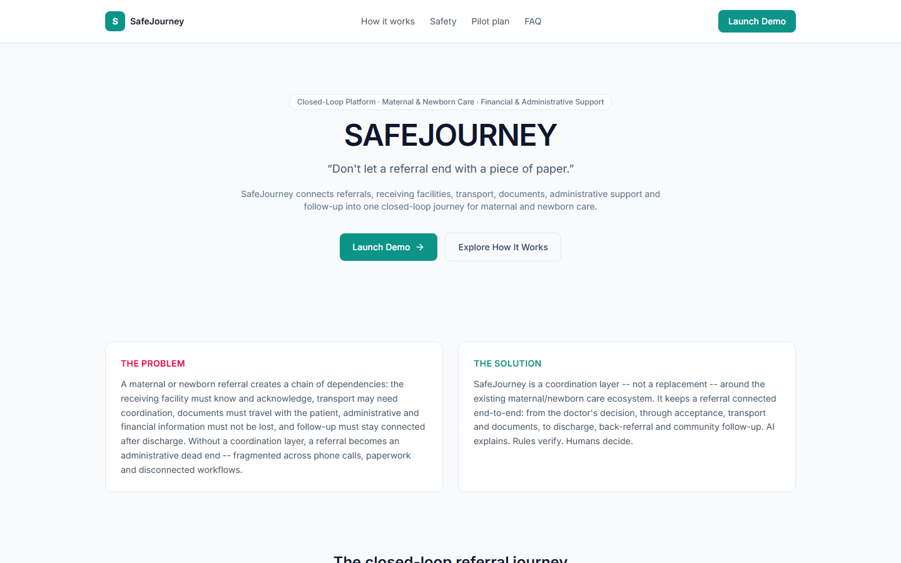
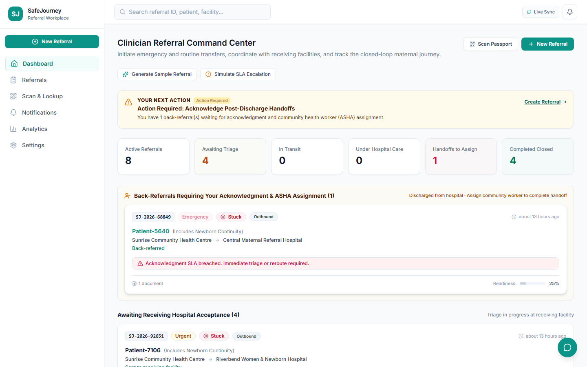
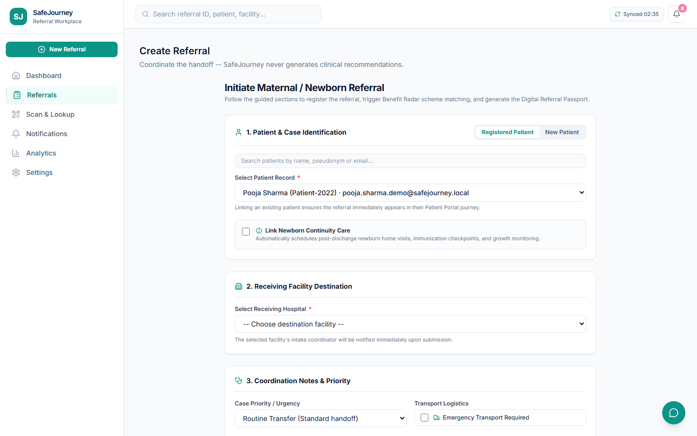
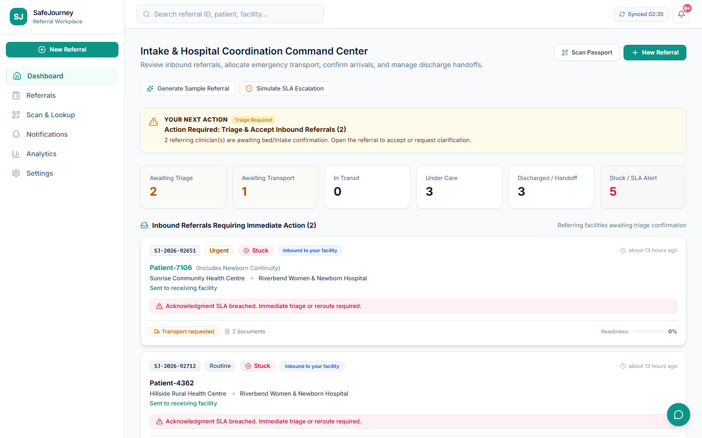
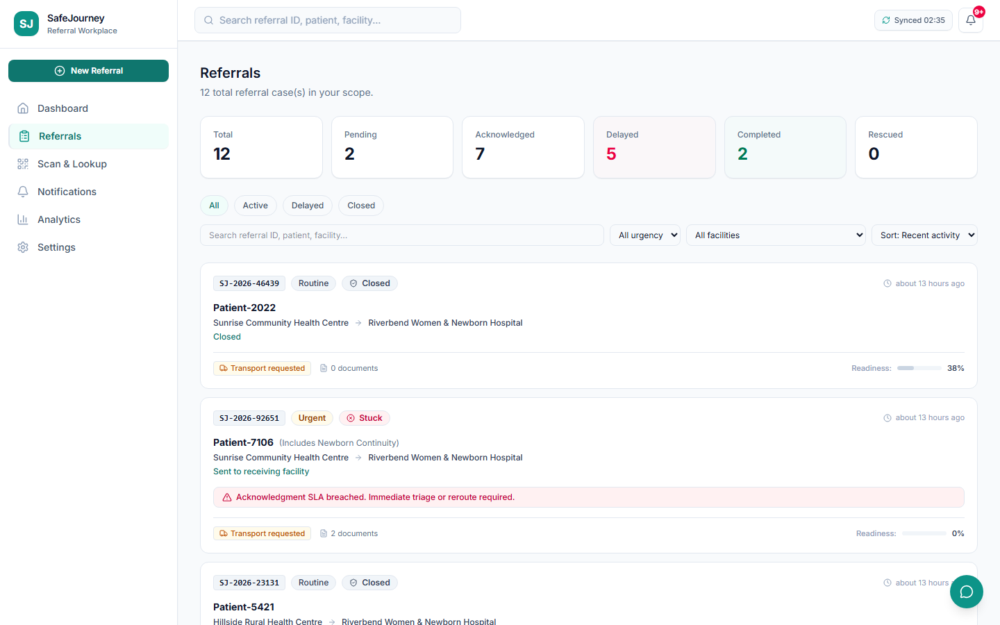
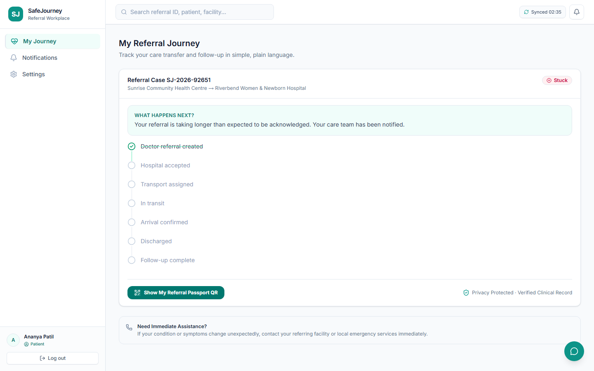
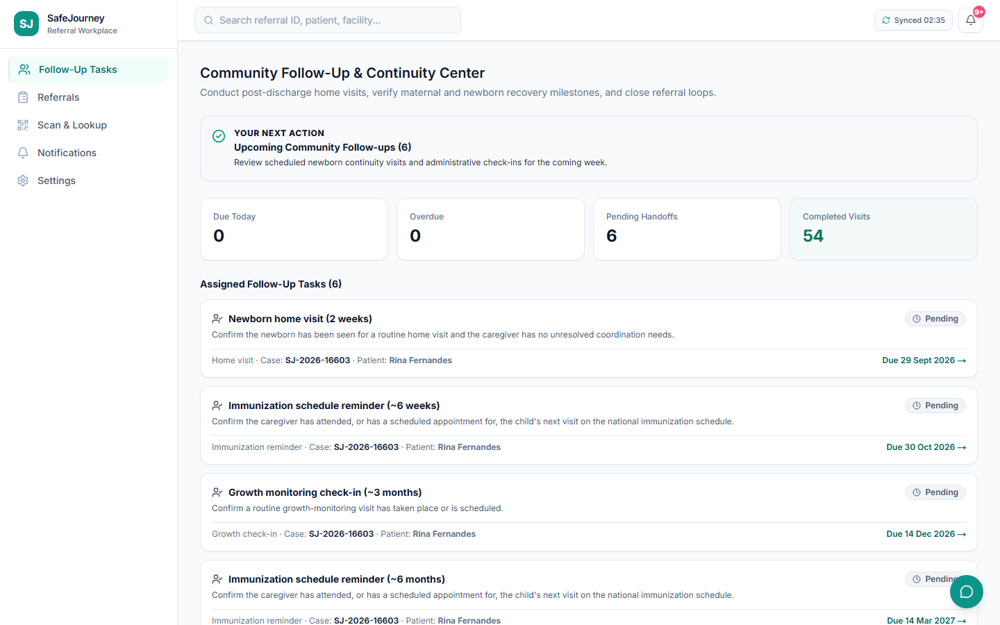
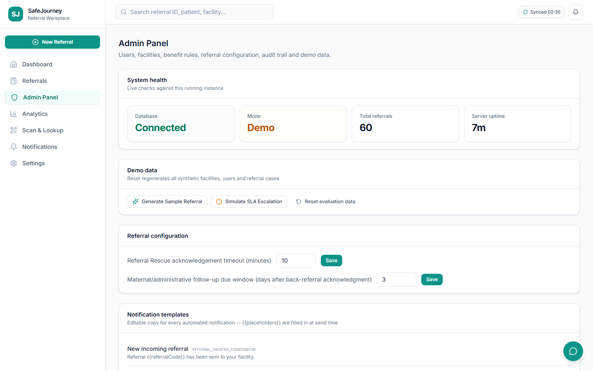
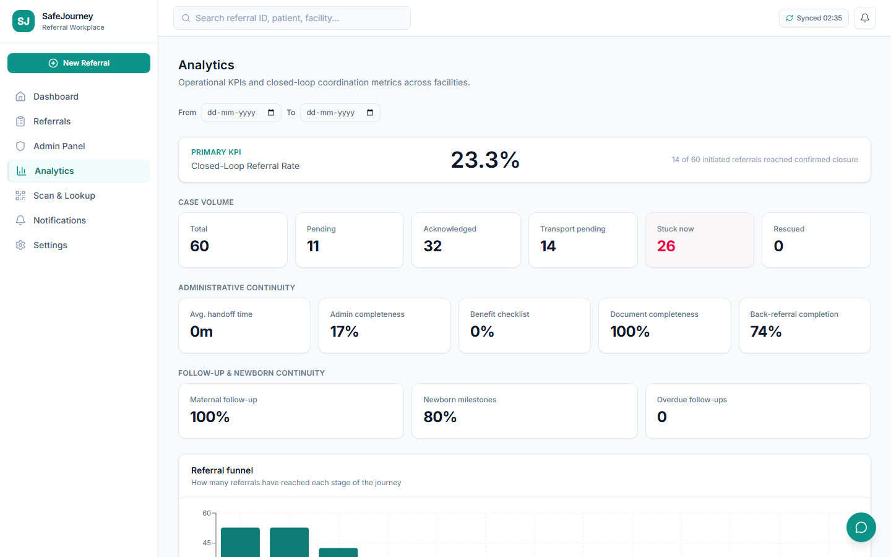

A referral doesn't fail because a doctor makes the wrong call. It fails in the gaps afterward — a phone call that doesn't get through, a form that gets lost, a family that never hears back. SafeJourney is the coordination layer that closes those gaps, keeping a maternal or newborn referral connected from the moment a doctor creates it to the moment the case is fully closed — across the doctor, the receiving hospital, transport, the patient's own family, and the community health worker who checks in afterward.
When a doctor refers a mother or newborn to another facility, that referral creates a chain of dependencies: the receiving hospital has to know and accept, transport has to be arranged, documents have to travel with the patient, financial/administrative paperwork has to be tracked, and someone has to follow up after discharge. Today that chain runs on phone calls and paper. If one link drops, nobody notices until it's too late — and the family is usually the last to find out what's happening to their own case.
SafeJourney doesn't replace clinical decisions — doctors still decide what's medically right. It replaces the coordination around that decision with one shared, live case record: every role reads and writes to the same referral, so nothing depends on someone remembering to make a phone call. The system verifies rules (has the back-referral been acknowledged? are follow-up tasks done?) so a case can't be closed while something real is still outstanding.
Every one of these is a real, distinct login in the app — not a mockup of a role.
Creates the referral, links it to a registered patient, and later acknowledges the back-referral.
Sits at the receiving facility. Accepts the case, arranges transport, confirms arrival and discharge.
The mother or family. Watches her own referral move through each stage in plain language.
A community health worker who closes the loop after discharge with home visits and check-ins.
Manages facilities, users, notification templates and the follow-up schedule.
This is the real lifecycle a referral goes through inside SafeJourney — the same sequence shown in the recorded demo.
A real signup form creates her login and a linked patient record — before any referral exists, so she can watch it appear later.
Searches the real patient directory, links the case to her account, picks a receiving hospital, marks whether transport is needed, and submits. A referral code is generated (e.g. SJ-2026-46439).
Her already-open dashboard is reloaded and the new case is there — read straight from the same database the doctor just wrote to, not a separate copy.
Accepts the case, requests transport, assigns a vehicle (demo-mode — see honest status below), and progresses it: en route → picked up → in transit.
Confirms the patient arrived, then records discharge. A destination is required — this is administrative coordination, never a clinical fitness call.
The coordinator drafts a back-referral summary and sends it home. Trying to close the case too early is refused by the server itself with the exact list of what's still outstanding — not a UI trick, a real backend rule.
Acknowledges the back-referral and assigns the case to a community follow-up worker, which creates the follow-up tasks.
Logs in, opens the case, and marks each task complete. The moment nothing is left open, SafeJourney closes the referral automatically — no one has to remember to.
Doctor and patient both see the identical closed state and full timeline — the same source of truth, not separate copies that might disagree.
Every image below is a live screenshot of the running application, taken this session — not a mockup.









How a request actually travels through the system — one application, one shared database, five kinds of logged-in users.
flowchart TB
subgraph Users["Five real logins"]
Doctor(["🩺 Doctor"])
Coordinator(["🏥 Coordinator"])
Patient(["🤰 Patient / family"])
Worker(["🚶 Follow-up worker"])
Admin(["⚙️ Admin"])
end
Doctor & Coordinator & Patient & Worker & Admin --> Browser["Browser session\n(its own cookie / login)"]
Browser -->|HTTPS| NextApp["Next.js app (App Router)\nPages + API routes, same codebase"]
subgraph NextApp_internal[" "]
Auth["Auth check\nJWT cookie + role"]
Authz["Authorization rules\ncanAccessReferral / canActOnFacility"]
API["/api/referrals, /transport,\n/back-referral, /follow-ups ..."]
end
NextApp --> Auth --> Authz --> API
API -->|Prisma ORM| DB[("SQLite database\none shared source of truth")]
DB --> API
API --> Notif["In-app notifications\n(created on write, read on poll)"]
API --> Audit["Audit log\nevery status change recorded"]
Every role hits the same Next.js server and the same database — there's no separate backend per role. What changes per login is which actions the authorization layer allows and which slice of data a query returns.
The same nine-step journey from above, drawn as an actual request sequence across roles.
sequenceDiagram
participant P as Patient
participant Doc as Doctor
participant DB as Shared Database
participant Coord as Coordinator
participant Worker as Follow-up worker
P->>DB: Register account (POST /api/auth/register)
Doc->>DB: Create referral (POST /api/referrals)
Note over DB: referral row created,\nstatus = CREATED
P->>DB: Reload dashboard (GET, own session)
DB-->>P: Referral now visible
Coord->>DB: Accept referral (POST /accept)
Coord->>DB: Request + progress transport (PATCH /transport)
Coord->>DB: Confirm arrival, then discharge
Coord->>DB: Send back-referral (POST /back-referral)
Coord--xDB: Try to close early (POST /close)
DB--xCoord: 409 refused — lists unresolved items
Doc->>DB: Acknowledge back-referral, assign worker
Note over DB: follow-up tasks created
Worker->>DB: Complete each follow-up task
DB-->>DB: Last task closed → auto CLOSE
Doc->>DB: View closed case
P->>DB: View closed case (identical state)
| Layer | Choice | Why |
|---|---|---|
| Framework | Next.js 14 (App Router) | Pages and API routes in one codebase, server components for authorization checks |
| Database | SQLite via Prisma ORM | Zero-config for a demo/pilot; schema is a documented drop-in swap to Postgres for production |
| Auth | JWT cookie + bcrypt | Session per role, checked server-side on every request |
| Validation | Zod | Every API boundary validates input shape before it touches the database |
| UI | React 18 + Tailwind CSS | Component-driven, consistent design system across all five role views |
| Testing | Vitest + Playwright | Unit tests plus real browser end-to-end scenarios (registration, rescue, closed-loop) |
What's real, what's intentionally simulated for a demo, and what doesn't exist yet.
| Capability | Status | Notes |
|---|---|---|
| Referral lifecycle (create → close) | Real | Every transition is a real API call against the live database |
| Cross-role live view | Real | Shared database reads, refreshed on load — not push-based |
| Closure guardrail (won't close early) | Real | Server refuses with an exact list of what's outstanding |
| Vehicle / transport assignment | Simulated | Vehicle label + ETA are operator-entered; no GPS/telemetry hardware exists |
| Back-referral summary drafting | Simulated | Deterministic template, editable by the coordinator — not a live AI call |
| Benefit/entitlement matching | Simulated | Rule-based evaluation against seeded scheme data, not a government API |
| SMS / WhatsApp delivery | Not built | Notifications are in-app only in this build |
| Separate "receiving hospital" login | N/A | That role is the Coordinator account at that facility |
For the full line-by-line breakdown with timestamps, see SAFEJOURNEY_VIDEO_FEATURE_MATRIX.md and SAFEJOURNEY_VIDEO_AUDIT.md in the project repository, produced alongside the recorded walkthrough.